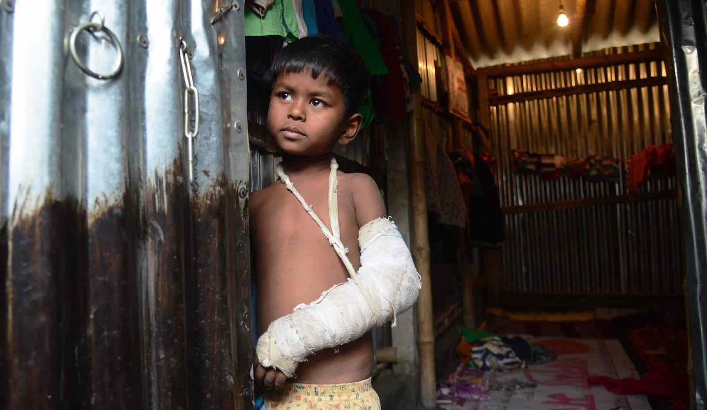

Impacts and Consequences
Impact on Physical Health: The impact on Physical Health of the Rohingyas are extremely concerning. The act of driving people out of the country of residence is completely inhumane. These Rohingya are walking 3-14 days without much food, water, and other basic needs. No food, water, shelter, Non-stop walking for 3 days, puts a huge amount of pressure on parents to feed their children. They become dehydrated, malnourished, hungry, at risk of getting deadly diseases, and in discomfort. Another impact on Physical Health on the Rohingya is when they have been through the gruesome task of being forced out of their country, they are sent to detention camps in Bangladesh. The condition of these camps are very below average and barely suitable for life. Not only is it not safe against natural disasters, water contamination becomes a huge problem. Studies from the WHO and Bangladeshi Ministry of Health show that around 62% of water available to people is contaminated with the bacteria, E. coli. This is due to the fact that water pumps and latrines are very close to each other, causing the water to be contaminated.
Impact on Mental Health: The mental health of the Rohingya people are also being affected by this humanitarian crisis. Due to the violent actions, many people are subjected to Post-Traumatic Stress Disorder also known as PTSD. These people arrive at the camps already suffering from PTSD from their journey through Myanmar. After they have settled in the camps for months, they become anxious on how they will get enough food, water, and other basic and essential needs. A person should not go through trauma, nonetheless different stages of trauma in a few months. My opinion on this matter is that mental health is a massive issue in the world not only in the refugee camps in Bangladesh. Though, these people have no access to help like therapy or counselling like many of us in first world countries. Which gives them a massive disadvantage compared to other people that are more privileged.